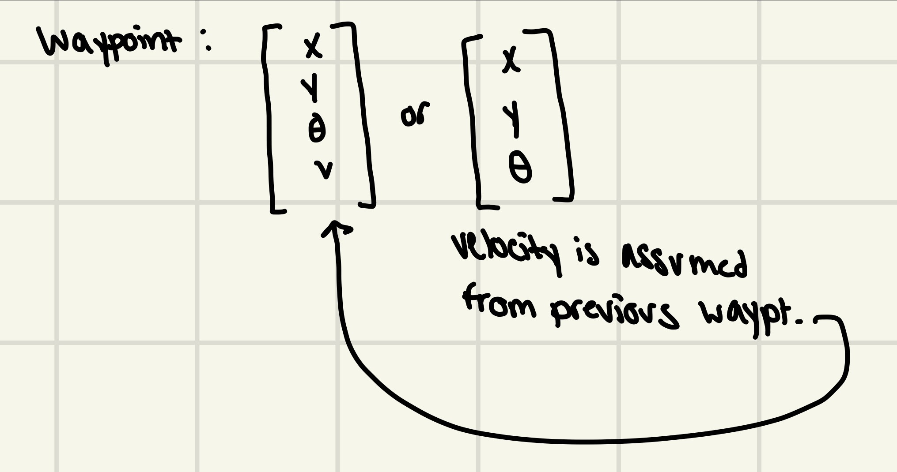
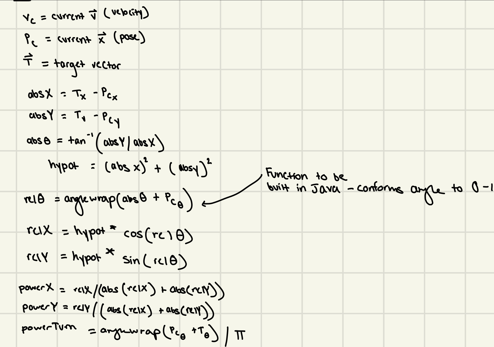
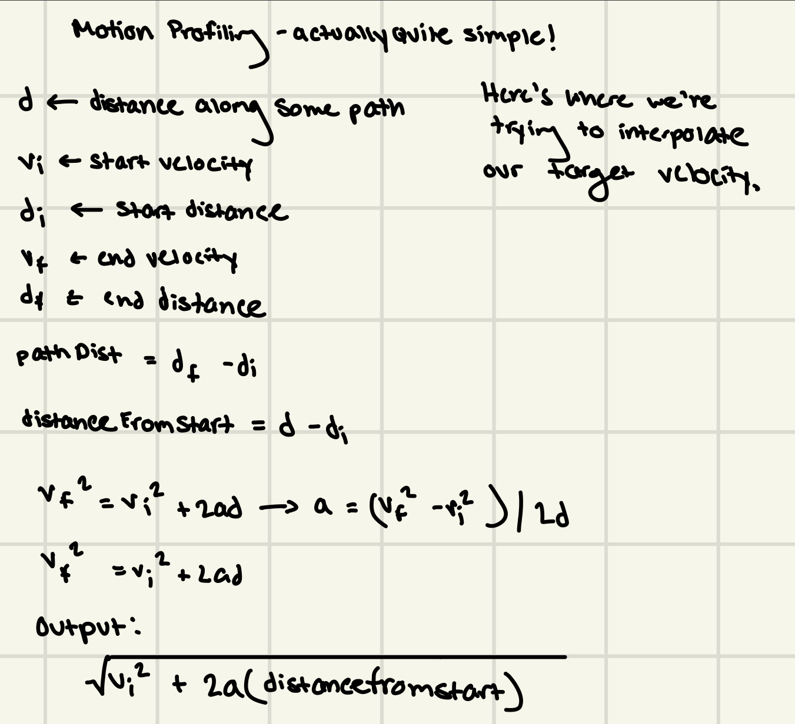
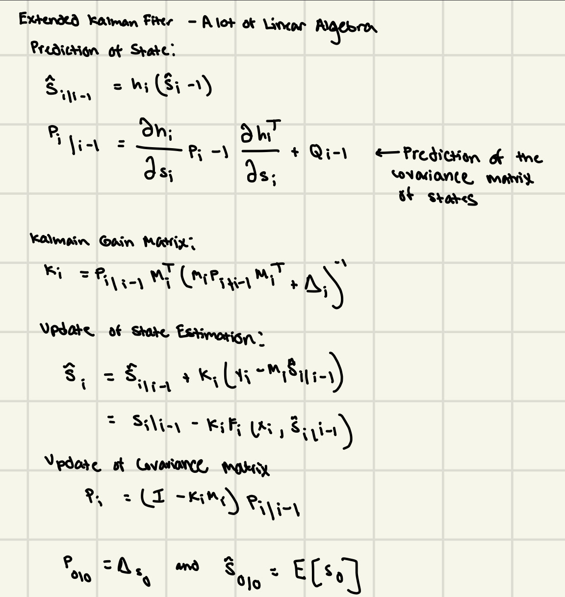
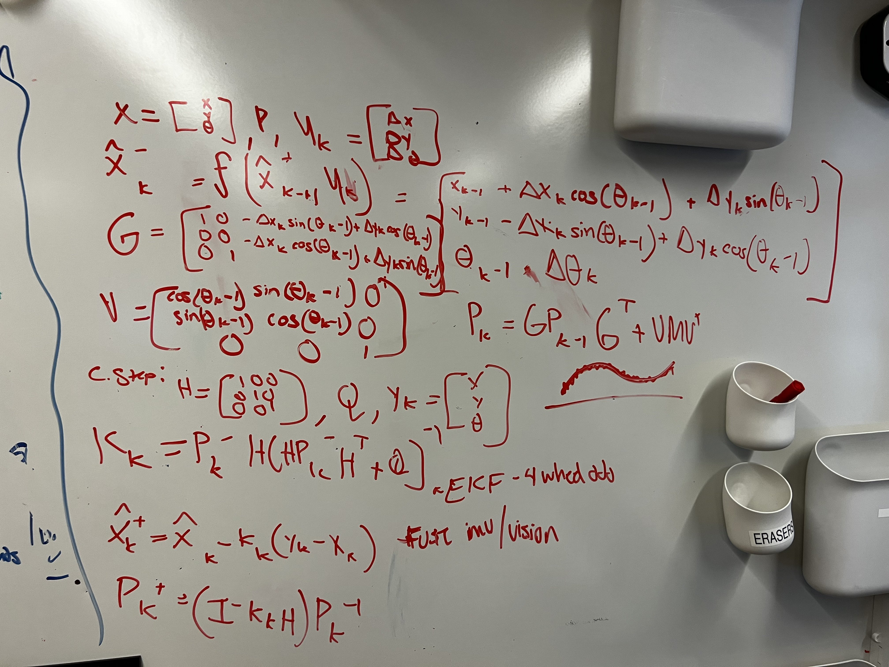

Pure Pursuit: Engineering Design Process
Achieving a pure pursuit algorithm with motion profiling.

Thinking
Existing Pure Pursuit Algorithms
There are several solutions to Pure Pursuit. FTC Team 11115 Gluten Free has an excellent tutorial on concepts behind Pure Pursuit. There are also libraries like RoadRunner and FTCLib that provide out-of-the-box solutions for vector-based movement. I've looked into both 11115's tutorial series and the libraries aforementioned but I would like to explore some of the deeper concepts of pure pursuit and how we can build a robust path-follower for FTC. The biggest problem with pure pursuit is the lack of motion profiling. This means that the robot cannot account for its instantaneous velocities and accelerations at any given point. The beginning and ends of paths do not speed up or slow down correctly. Is there a way to improve the existing pure pursuit algorithm to include motion profiling? Do solutions already exists? If so, are they adaptable to FTC-use? These are the questions I will be exploring as I try to come up with a solution.
Research
I have been looking into a few papers that concern Pure Pursuit alongside looking at the repositories of some other FRC/FTC teams and how they implemented Pure Pursuit. Pure Pursuit is an extremely old algorithm that has many papers written on it. Here are some that I looked at:
- Coulter, R. Craig. Implementation of the pure pursuit path tracking algorithm. Carnegie-Mellon UNIV Pittsburgh PA Robotics INST, 1992.
- Zeng, Michael. "PI (t) D (t) Control and Motion Profiling for Omnidirectional Mobile Robots." arXiv preprint arXiv:2110.09707 (2021).
- Wang, Wei-Jen, Tusng-Ming Hsu, and Tzu-Sung Wu. "The improved pure pursuit algorithm for autonomous driving advanced system." 2017 IEEE 10th International Workshop on Computational Intelligence and Applications (IWCIA). IEEE, 2017.
- Chen, Yuanpeng, et al. "Optimization of pure pursuit controller based on pid controller and low-pass filter." 2018 21st International Conference on Intelligent Transportation Systems (ITSC). IEEE, 2018.
- Peng, Mingxing, et al. "Imitative Reinforcement Learning Fusing Vision and Pure Pursuit for Self-driving." 2020 IEEE International Conference on Robotics and Automation (ICRA). IEEE, 2020.
The papers provide a great insight as to how they implement the Pure Pursuit algorithm and some of the improvements that they have made. I was planning on using a PID-controller already but the implementation of a low-pass filter seems really interesting to me. I'll see what we can achieve by using a low pass filter or a Kalman Filter. Teams that have implemented Pure Pursuit do not include motion profiling. Don't get me wrong, pure pursuit works great for them and they have been far more successful with autonomous than I will be this year but I believe motion profiling can give the edge in speed/time for autonomous operation.
Math
Basis Of Pure Pursuit: Waypoint. Waypoint is a vector that can possess either 3 or 4 elements (x, y, heading, and optional: velocity). Each PP-Path contains several waypoints.
Pure Pursuit Motor Power Calculations: Using the current robot's localization vector and the target vector. Utilizing basic trigonometric and mathematical equations, we are able to obtain the appropriate power powers to assign to the motors. These calculations are based on the kinematics of mecanum drive.
Interpolation of Target Velocity for Motion Profiling: Equations based on the kinematics of mecanum drive.
Extended Kalman Filter Math: Imagine we have some sensor that provides the robot with some sort of input The sensor, at some #-hz polls, has noise. This can affect our calculations. Thus, we use a Kalman Filter to de-noise the input that we receive to have a smoother estimation of the reading. This involves a lot of linear algebra and multi-variable calculus. These equations are solely for my understanding. My code implementation follows this.
4-Wheel Odometry w/ IMU on Extended Kalman Filter Calculations: This is the localization math assuming a 4-wheel odometry system combined with IMU/Vision (aka my dream software robot). We use this equation to derive the absolute world position of the robot. It seems like a mess on the board but the equations derive out of the position of the robot using Euler Integration. Then, we apply a Kalman Filter to the readings of the sensors and the various localization inputs we have. It seems complicated but simpler in code.
Cycle of Testing
It is important to note that I could not put this work into full-fledged action. I focused a lot more on getting competition ready and finishing up the hardware of the bot. Some strides were made though, and it is noticeable through videos. While I unfortunately do not have many videos, here are some videos of Pure Pursuit w/ Motion Profiling in action:
It is hard to tell the actual speed of the robot at each frame but it is evident that the robot is speeding up and slowing down properly. The robot stopped smoothly where I wanted it to. This is something that would not be possible with basic pure pursuit. Hopefully, I can use this code to its full advantage assuming we are able to finish the actual robot on time.Code: https://tinyurl.com/sanvyfch